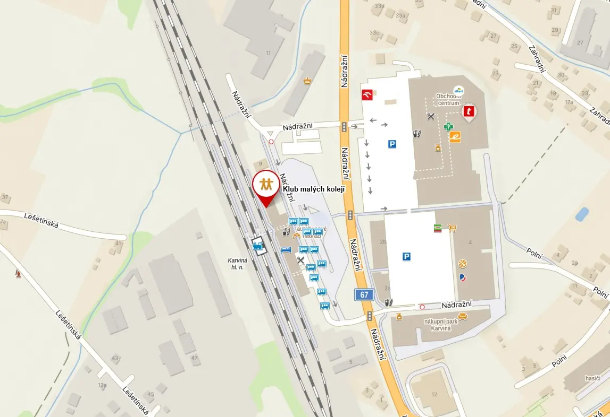
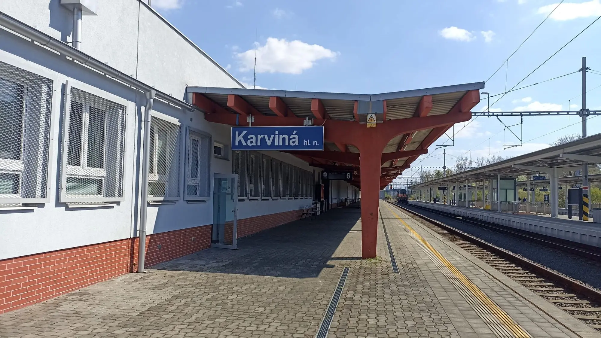

Kontakty
Kde nás najdeš? Klubovnu máme tematicky přímo na 1. nástupišti karvinského hlavního nádraží!



Zaujali jsme tě a chceš se k nám podívat? Napiš nám a domluvíme se, kdy se můžeš zastavit.
A jak nás můžeš kontaktovat? Třeba jedním z těchto způsobů!
Kontakty
- Klub malých kolejí, z.s.
- Adresa:Karviná - Fryštát
Nádražní 695/7
733 01 - IČO: 22891064
- E-mail: malekoleje@malekoleje.cz
- Datová schránka: hk2uh6i
Rada klubu
Ondřej Hofmann
E-mail: hofmannondrej@gmail.com
Telefon: +420 736 650 886
Rostislav Roubic
E-mail: rroubic@seznam.cz
Telefon: +420 777 552 682
Jakub Frömmel
E-mail: jacobfrommel@seznam.cz
Telefon: +420 703 351 500
Další užitečné odkazy
- Instagram kmk:kmk_karvina
- Instagram o důlní železnici:zachranme_dulni_drahu
- Náš profil na firmách.cz:Firmy.cz